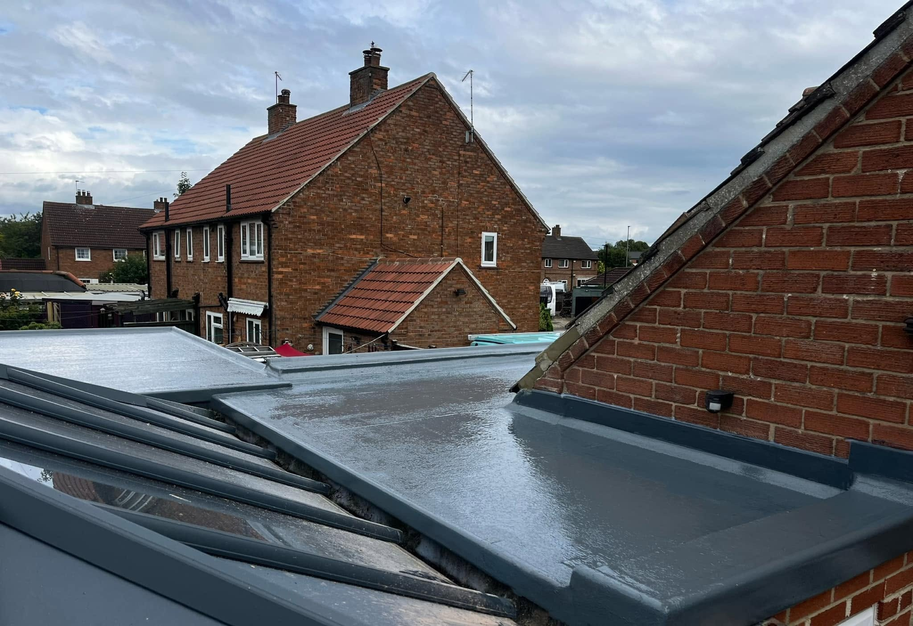
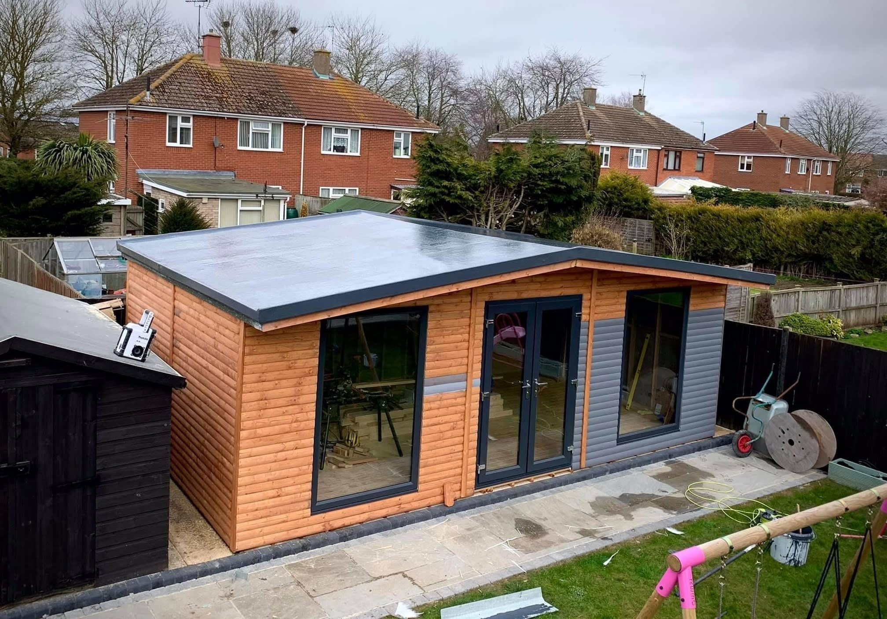
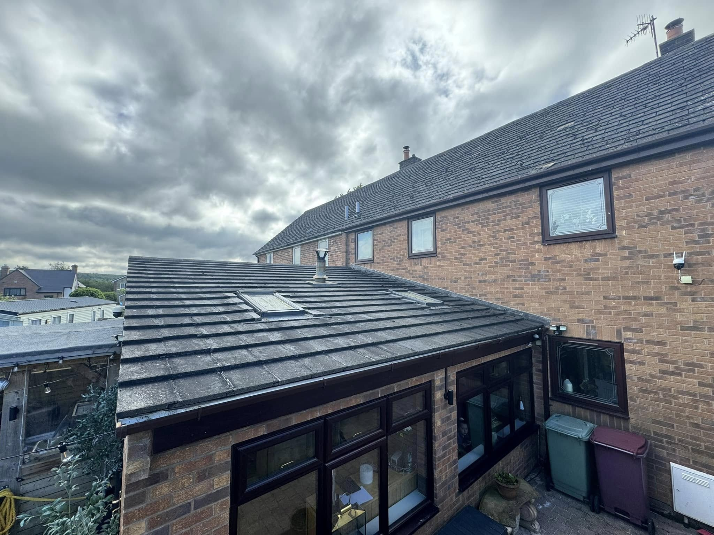
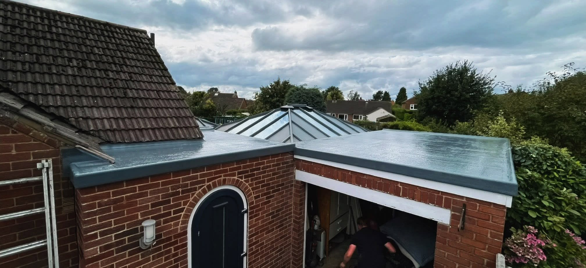
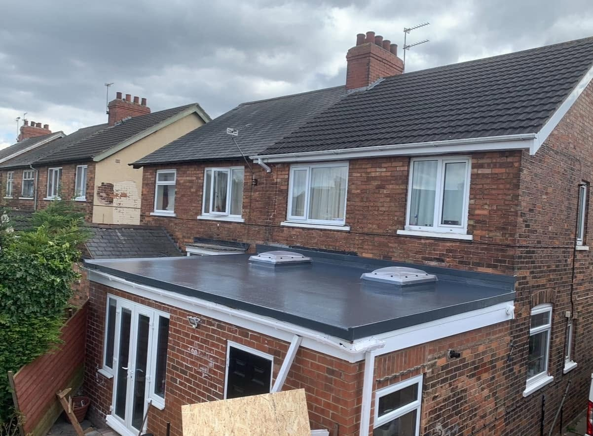
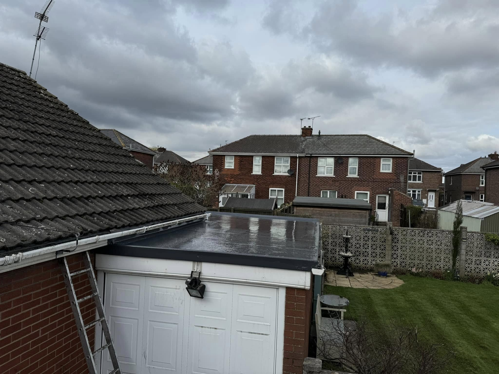
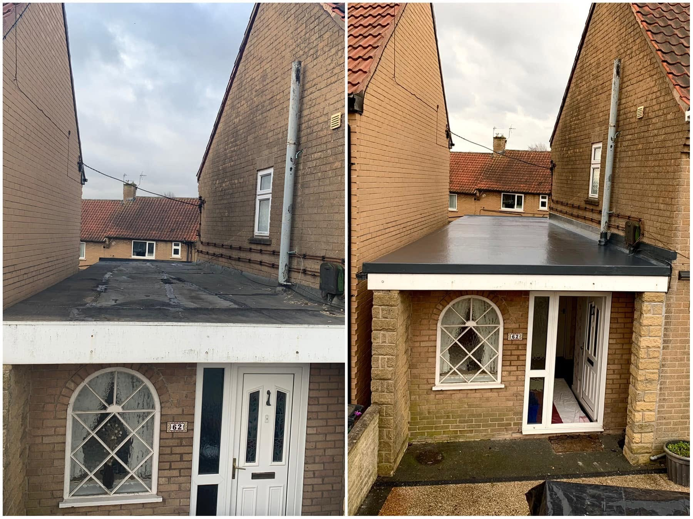
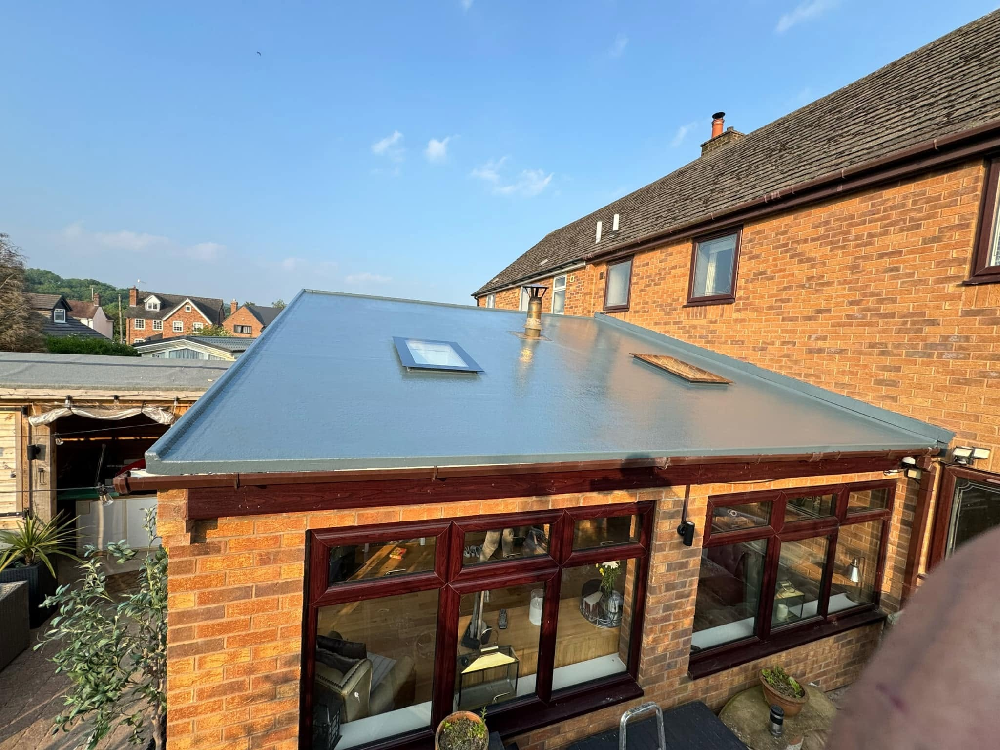

Lincoln & East Midlands · Roof Repairs & Replacement in Lincoln
Repair or replace? Start with the roof you have.
Discuss roof repair or replacement with Roofing Replace & Repair in Lincoln. Send roof photos and project details directly to Alex on WhatsApp.
Roof Repairs & Replacement in Lincoln
Understand the concern. Then agree the work.
If your roof needs attention, start with a clear description of the problem and the roof itself. Roofing Replace & Repair can discuss repair and replacement enquiries, with the appropriate work based on what is found at the property.
Explain what you have noticed
Tell Alex when the concern started, which part of the property it affects and whether it changes after rain. Ground-level photographs of the roof and any visible internal signs can help explain the problem. The source needs to be established before the final repair or replacement work is agreed.
Repair and replacement enquiries
A small isolated issue and a roof nearing the end of its useful life can call for different work. Describe any previous repairs and the current roof covering if you know it. The porch collage in the gallery shows several stages of one roof project; the whole image is kept visible so you can follow the change.
Discuss your roof →

Flat roofing & Conservatory roofs
Roof surfaces. Rooflights. Finished edges.
See how the completed roof meets the surrounding walls and rooflights. The photos cover broad roof areas and the details around openings.
Discuss your project →

RECENT WORK
Roof Repairs & Replacement in Lincoln in pictures.
Discuss roof repair or replacement with Roofing Replace & Repair in Lincoln. Send roof photos and project details directly to Alex on WhatsApp.



Lincoln & East Midlands
Flat roofing, with direct contact.
Talk to Alex at Roofing Replace & Repair about the property and the roof work you have in mind. Call or send an enquiry on WhatsApp with the location and photos.
Flat roof work, including GRP fibreglass, is listed by the business.
Explore extension roofs, conservatory conversions and outbuilding roofs.
Call Alex or prepare a WhatsApp message with your project information.
YOUR QUESTIONS
Before you enquire.
Can you tell whether a roof needs replacing from a photo?
A photo can help explain the concern, but it may not establish the condition of the whole roof. Discuss what needs checking with Alex before agreeing the work.
What should I send about a leak?
Send your postcode, the type of roof, where the issue appears and when you notice it. Add photos taken safely without climbing onto the roof.
How do I contact the business?
Call 07985 366784 or use the WhatsApp form to prepare your enquiry. You can attach photos before sending it.
REQUEST A QUOTE
Tell us what you have in mind.
Send the details of your project and its location. WhatsApp opens with your enquiry ready to send, where you can also attach photos.
Roofing Replace & Repair
Ready to discuss your project?
Lincoln & East Midlands